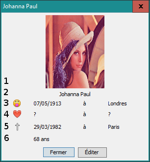

: la date et le lieu de naissance ;
: la date et le lieu de naissance ; : la date et le lieu de marriage (uniquement si la personne
est/était mariée) ;
: la date et le lieu de marriage (uniquement si la personne
est/était mariée) ;
 : la date et le lieu de décès ;
: la date et le lieu de décès ;
Vous pouvez accéder aux informations détaillées d'une fiche en double-cliquant dessus.

Les zones sont détaillées ci-dessous :
: la date et le lieu de naissance ;: la date et le lieu de marriage (uniquement si la personne
est/était mariée) ;
: la date et le lieu de décès ;Prochain sujet : Ajouter une fiche